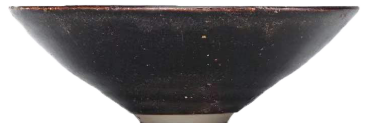

吉州窑木叶盏
南宋 江西省博物馆


这件南宋吉州窑木叶，高4.6厘米，口径10.7厘米。
这件木叶纹盏，体现了吉州窑的特有风格。制作时，先在胎上施一层黑釉，然后在经过特殊处理的树叶上施一层淡釉，再把树叶贴在黑瓷坯体上，烧成后即成为木叶纹。木叶有半叶、一叶，也有二、三叶叠加。所用叶子有人认为是桑叶，也有人认为是菩提树叶。经过这样加工过的黑釉碗，有一种质朴的野趣。这种制作工艺很少流传下来，对于它的研究直到20世纪80年代才开始。